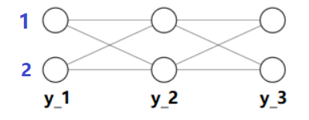
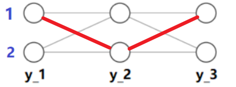

条件随机场是一个序列模型，被广泛应用在NLP的标注任务上。
目标
假设输入一个序列 $$ X = \left(x_1,x_2,\dots,x_n\right) $$ CRF模型需要预测序列中每个元素$x_i$对应的标签$y_i$，即输出一个序列 $$ \hat{Y} = \left(\hat{y}_1,\hat{y}_2,\dots,\hat{y}_n\right) $$
假设
- 只有相邻的标签之间具有依赖关系（线性链、无向图）。
- $y_i$依赖于X
训练
前向传播
特征工程
转移特征
构造$K_1$条关于$y_i$和$y_{i-1}$的特征，即
$$
t_k = t_k(y_{i-1},y_{i},x,i) = \begin{cases}
1, \text{condition_1} \\
0, \text{condition_0}
\end{cases}
$$
状态特征
构造$K_2$条关于$y_i$的特征，即
$$
s_k = s_k(y_{i},x,i) = \begin{cases}
1, \text{condition_1} \\
0, \text{condition_0}
\end{cases}
$$
计算概率
假设每个$y_i$都有两种可能的取值，即$y_i \in {1,2}$。当序列长度等于$3$时，所有可能的路径如下图所示

如果$Y = (1,2,1)$，即为下图中的红色路径

我们对如图所示的红色路径进行上文所述的特征工程。
转移特征共有$K_1\times 2$个（$i \in {2,3}$），状态特征共有$K_2 \times 3$个（序列包含$3$个结点）。将这些特征拼接起来，我们将得到一个长度为$K = 2K_1+3K_2$的一维向量，这个向量完全是由$0$和$1$组成的。
将这个向量馈入一个单层的感知机（没有激活函数），我们将得到一个数值，可以视为该路径的得分。
本例中每个$y_i$有$2$种可能的取值，所以总共存在$2^3$条可能的路径。对这些路径全部进行特征工程，我们将得到$2^3=8$个由0和1组成的向量，可以表示为一个$8$行$K$列的矩阵$X_F$。
直接把矩阵$X_F$馈入感知机，我们就可以得到一个$8$行$1$列的向量$Y^*$，其中的每个元素代表了对应路径的得分。
对该向量使用softmax归一化，即可将每个元素转换为给定$X$条件下出现对应路径的概率。
Loss
统计学习方法里说是通过极大化训练数据的对数似然函数来求模型参数，即
$$ W = \mathop{\arg\max}\limits_{W} \log \prod_{X,Y} P_W(Y|X)^{\widetilde{P}(X|Y)} = \mathop{\arg\max}\limits_{W} \log \sum_{X,Y} \widetilde{P}(X|Y) \log P_W(Y|X) $$
如果使用梯度下降法求解，那么相应的就是最小化负对数似然函数（negative log-likelihood），即pytorch中的NLLLoss。
预测
使用CRF预测即找出在给定$X$的条件下出现概率最大的路径。
理论上可以通过遍历所有路径，并根据前文前向传播的内容算出对于的概率，从中找出概率最大的路径即可。
当路径空间很大时，遍历是不可行的。一般使用维特比算法求解。
步骤：
- 遍历$Y_2$所有可能状态，对每一个状态找使$(Y_0,Y_1,Y_2)$转移概率最大的$Y_1$，记下来并形成路径$S_1$。
- 遍历$Y_i$所有可能状态，对每一个状态找使$(S_{i-1},Y_{i})$转移概率最大的$S_{i-1}$，记下来并形成路径$S_i$。
- 对终点$Y_{n+1}$，找使$(S_n,Y_{n+1})$转移概率最大的$S_{n}$，记下来。
参考：https://www.zhihu.com/question/20136144
需要注意的是，第$i$步转移的概率是$P(Y_0=\text{START},Y_1 = y_1,\dots,Y_i = y_i,Y_{n+1}=\text{STOP}|X)$，既需要考虑走过前面以确定路径的概率，还要考虑能够在第$n$步结束的概率。